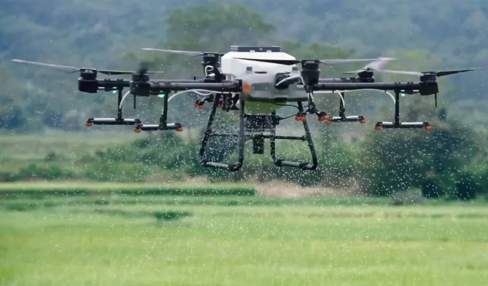
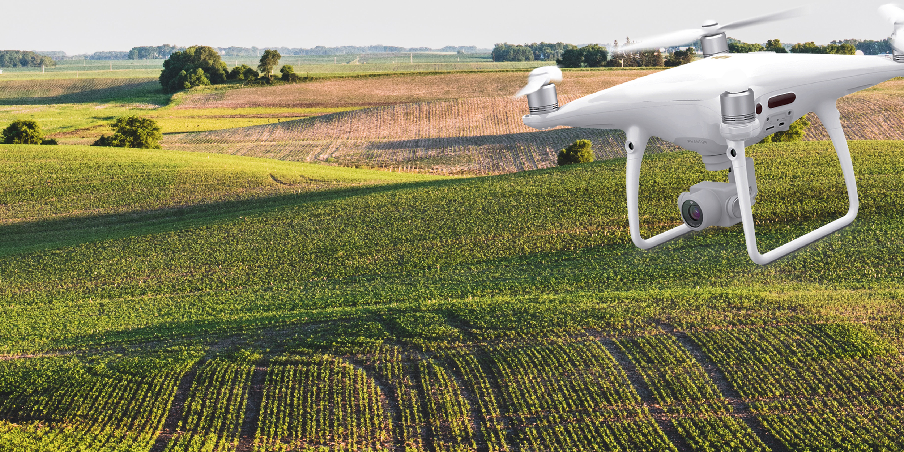
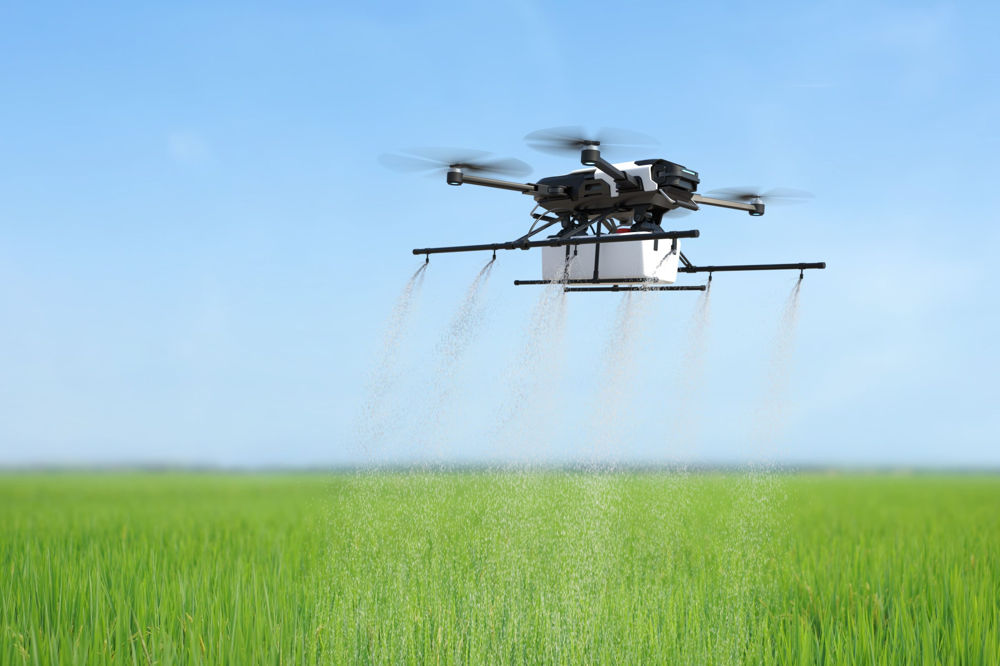
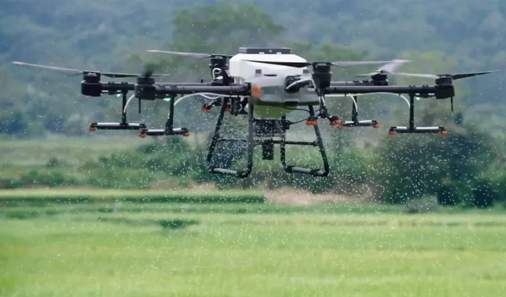

GROMAP
Este modelo é ideal para mapeamento agrícola!
Equipado com câmeras de alta resolução, este drone faz mapeamento detalhado das plantações e do solo.
Este modelo é ideal para monitoramento de culturas
Utiliza câmeras multiespectrais e sensores NDUI Índice de Vegetação por Diferença Normalizada para monitorar a saúde das plantas.
Este modelo é ideal para pulverização com precisão!
Equipado com um sistema de pulverização de precisão, aplica defensivos e fertilizantes de forma eficiente.
Este modelo é ideal para mapeamento agrícola!
Equipado com câmeras de alta resolução, este drone faz mapeamento detalhado das plantações e do solo.